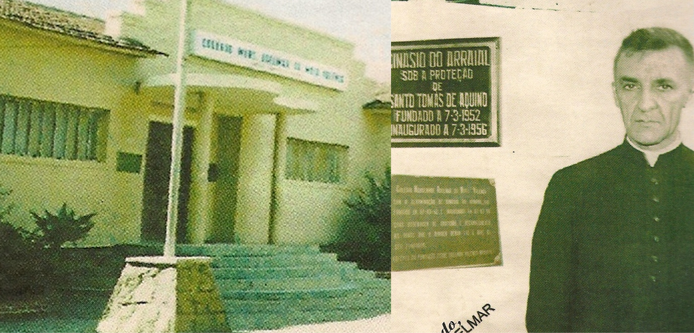

“Com sabedoria e devoção, transformando a fé em aprendizado e a tradição em futuro”
22.05.2012
|
O Colégio > História

História e Tradição
O Colégio Monsenhor Adelmar da Mota Valença é uma Instituição Escolar de Natureza Confessional, sem fins lucrativos, inscrita no CNPJ sob o número 34.074.252/0001- 87, situado à Avenida Júlio Brasileiro, nº 730 – Heliópolis – CEP 55.295 - 475 em Garanhuns – PE, tendo como Entidade Mantenedora o Instituto das Missionárias de Nossa Senhora de Fátima do Brasil.
O estabelecimento de ensino foi fundado em 07 de março de 1952, sendo oficializado através do Decreto Governamental Nº 1.422, de 08 de novembro de 1956. Por sua vez, a Portaria Nº 6.312, da então SEDUC, publicada no Diário Oficial de 05 de agosto de 1982 aprova o Regimento Substitutivo e referencia esta Instituição para o devido funcionamento. Também em conformidade com a Portaria Nº 6.312, a mudança de denominação ocorreu em 05/08/1982.
“Mons. Adelmar da Mota Valença, fundador do Colégio do Arraial, recebe a justa e sincera homenagem daqueles que se sentem reconhecidos pelo muito que fez em prol de nossa educação. De acordo com o Diário Oficial do Estado, publicado no dia 06 de agosto e de conformidade com a Portaria Nº 6.312 de 05 de agosto de 1982, o Secretário de Educação, através do Departamento de Normatização e Registro, autorizou a mudança de denominação do Ginásio do Arraial, localizado na Av. Júlio Brasileiro 703, em Garanhuns, para Colégio Mons. Adelmar da Mota Valença” (O Monitor - Gus, 14/08/1982).
Em se tratando de Instituição de Natureza Confessional, esta invoca como direito, o de professar a Religião Católica Apostólica Romana. Entretanto, a mesma não fará distinção para com os praticantes de outros credos que a ela se vinculem. Assim, sempre respeitando as determinações da legislação vigente e honrando os princípios da cidadania, atenderá à demanda solicitada, levando em conta suas condições e o que está editado em Lei.
Eventos que conferem Identidade Confessional Católica à Instituição:
Vivência de Datas Litúrgicas;
Vivência da Semana Santa;
Celebração do Crisma pela Comunidade Católica Shalom;
Vivência da Semana da Valorização à Vida;
Vivência do Mês Mariano
Tríduo de Nossa Senhora de Fátima - Atividades religiosas: missa, terço e caminhada, em comemoração ao 13/05, dia em que se reverencia Nossa Senhora de Fátima, padroeira da Instituição;
Em unidade cristã invencível, fruto de
heróico e contante labor
Qual sacro luzeiro, resplendes paz e amor.
Em Garanhuns onde a seiva sagrada,
da instrução fulgurante transluz,
És meu Ginásio do Arraial, um Coração de Luz!
Oh! Juventude em flor, teu canto sem igual,
Do teu ginásio o ardor reflete o ideal
Em busca do saber, confirmam teu valor
Teu nobre proceder e teu fervor.
Canta feliz juventude imortal,
Canta vibrante, radiosa a sorrir
Vencer a batalha não é o ideal.
Prefere na luta com amor prosseguir!
Berço de glórias, de amor e virtude
São louros d'alma, conquistas da fé
Encerra a força que nos mantém de pé.
Fiéis seguimos teus ensinamentos que
nos inspiram o pátrio dever
Núncias de altivos ideais de ti, queremos ser.
Quando o amanhã surgir em mil recordações
Feliz hás de ouvir que nossos corações
Cantando a te exaltar o amor em oração
Te põem sobre o altar da gratidão!
Canta feliz juventude imortal,
Canta vibrante, radiosa a sorrir
Vencer a batalha não é o ideal.
Prefere na luta com amor prosseguir!
“Imagem e semelhança de seu Criador”, capaz de construir e dominar tecnologias e aplicá-las com vistas à formação de uma sociedade humanizada
Missão
A Missão do Colégio Monsenhor Adelmar da Mota Valença, através da oferta da educação escolar, é propagar a evangelização, em consonância com a filosofia das Missionárias de Nossa Senhora de Fátima do Brasil. Entretanto, esse propósito não constitui função primordial do Estabelecimento, Isto é, transmitir a doutrina católica através da evangelização, desde que seu propósito também esteja voltado para educar as pessoas, considerando a sua totalidade e potencialidade, construindo assim, uma comunidade que possa voltar seus interesses para a compreensão da mensagem dos Evangelhos, e a prática de fraternidade, como também para a formação intelectual e para construção de atitudes indispensáveis à prática da cidadania e inserção no mundo do trabalho. Esse ideal, além de estar direcionado aos educandos/estudantes, também deverá abranger os administradores, professores e funcionários, e por extensão os seus familiares.
O Colégio Monsenhor Adelmar da Mota Valença - CMA, como Instituição Educacional que professa a Religião Católica Apostólica Romana, propõe-se a educar crianças e jovens, considerando a sua Missão, e levando em conta o ser humano em sua totalidade, de modo a conciliar a base científica com a fé cristã.
Visão
É no contexto acima, que a filosofia educacional desta Instituição Escolar deverá basear-se. Isto faz sentido, considerando que o conhecimento, por si só, é insuficiente para nortear a vida das pessoas. É necessário, portanto, que o conhecimento esteja aliado à fé - e, principalmente a fé segundo os Evangelhos de Nosso Senhor Jesus Cristo - considerando o resgate do ser humano em sua totalidade – corpo e alma, numa Visão salvífica. Desse modo, todo conhecimento deverá considerar o ser humano em sua dimensão maior: Pessoa detentora de uma condição especial. O que justifica a expressão: “Imagem e semelhança de seu Criador”, capaz de construir e dominar tecnologias e aplicá-las com vistas à formação de uma sociedade (no sentido pleno da palavra) humanizada.
Valores
Diante do exposto, compete a este estabelecimento de Ensino proporcionar os meios necessários para que o educando/estudante, sob a sua responsabilidade, adquira Valores - aliados aqueles trazidos do seu primeiro grupo social: a família - para que possa desenvolver suas potencialidades e tornar-se capaz de exercer a sua cidadania no meio em que esteja inserido e, sempre que se fizer oportuno, contribuir para a diminuição das injustiças e desigualdades que se manifestam na sociedade contemporânea, agindo com justiça e solidariedade.